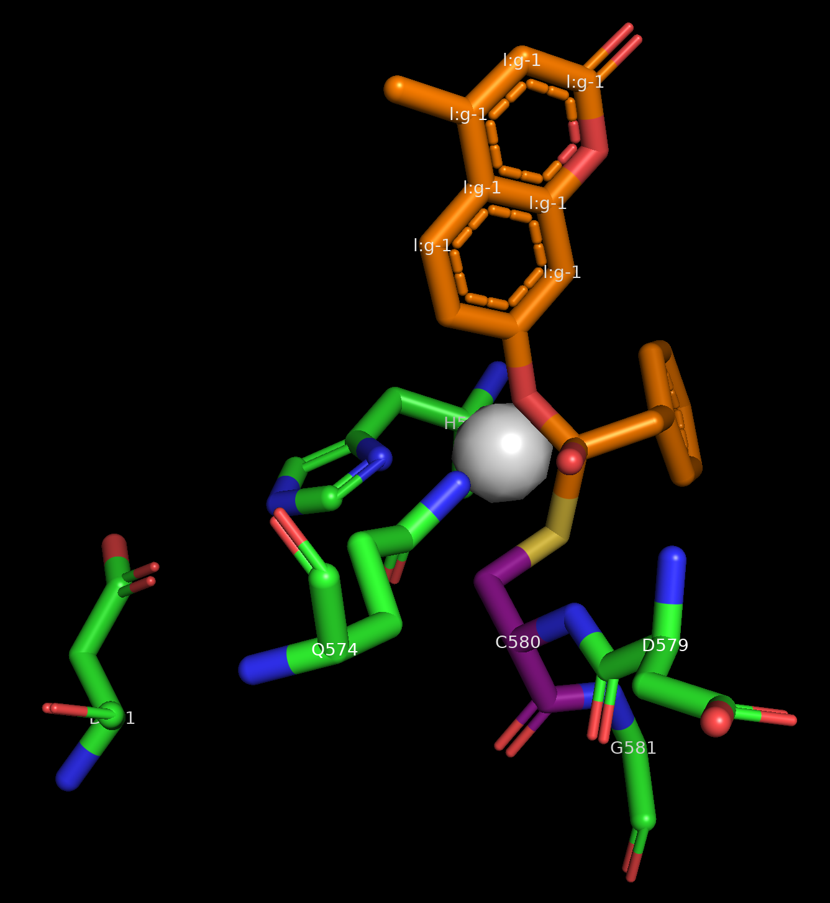
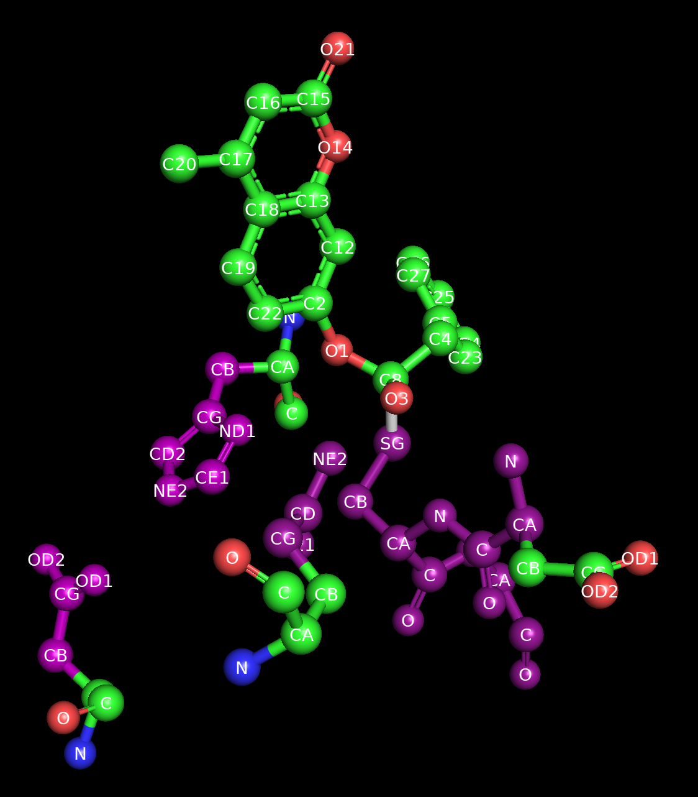
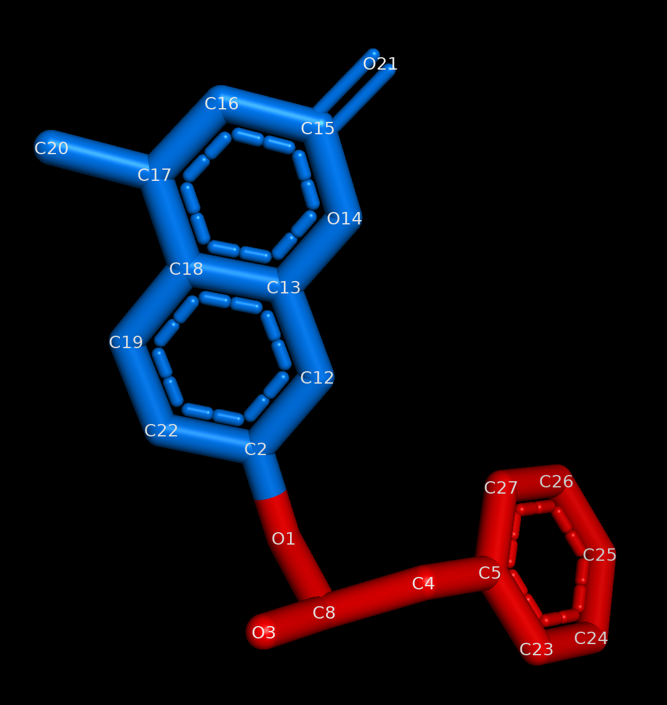
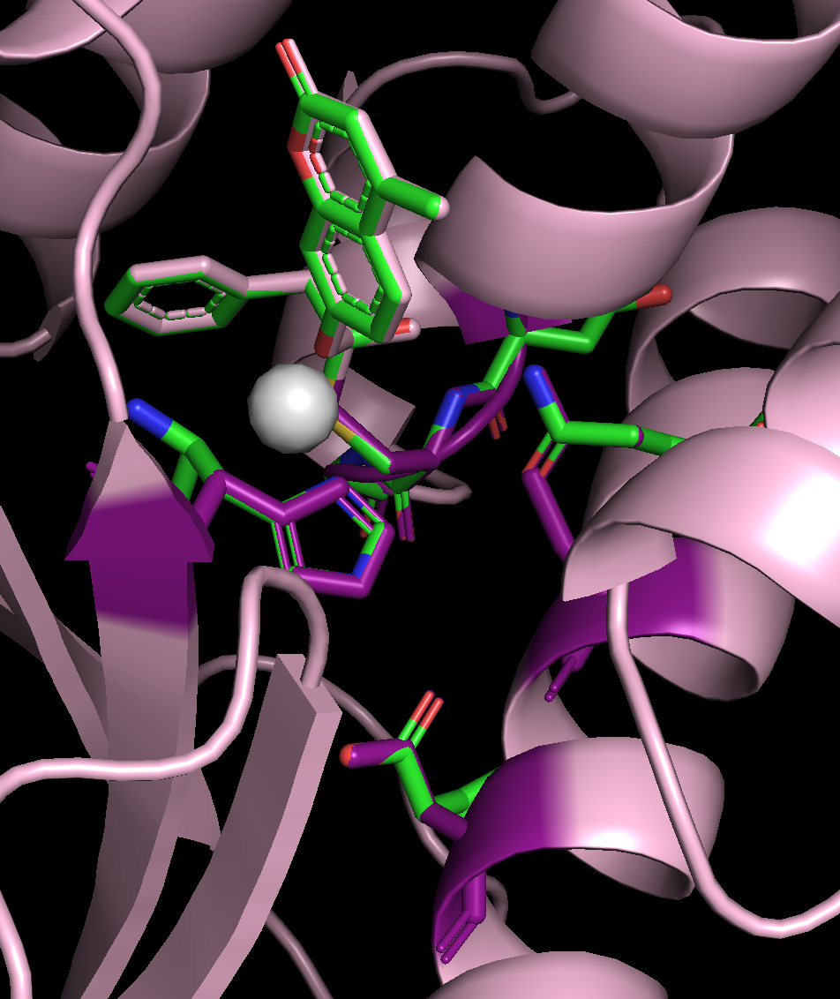
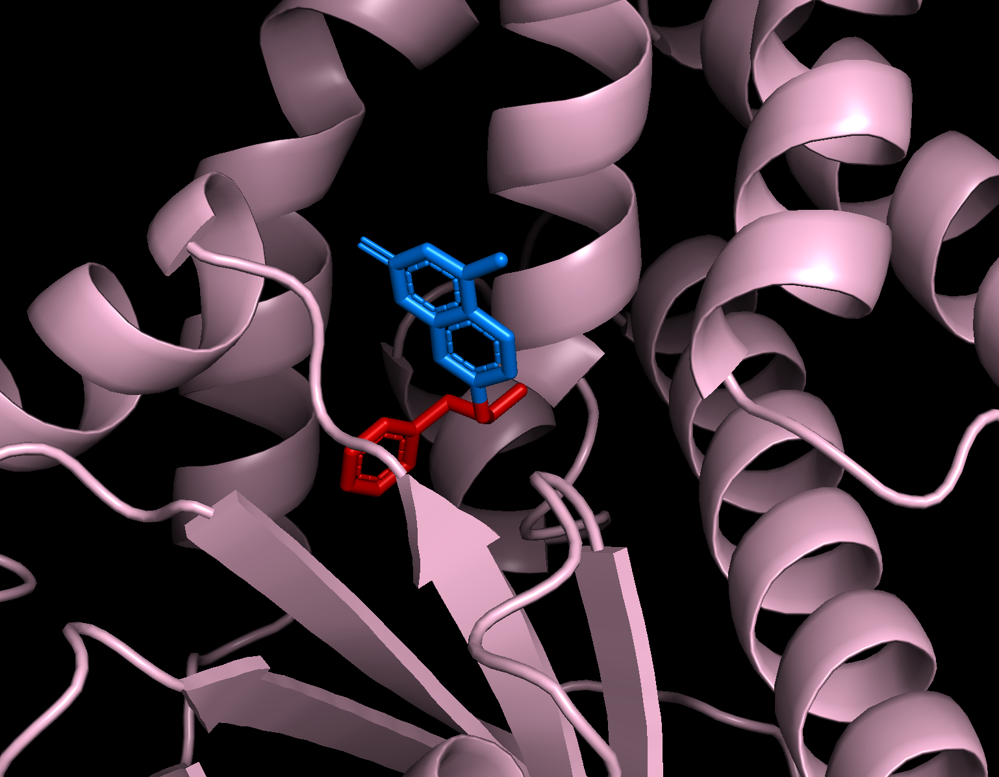

Enzyme Design in RFdiffusion3¶
Before We Get Started…¶
This tutorial does not cover installing RFD3. If you need to install this model, see the README for installation instructions. You will need to remember the path to the directory where you stored your checkpoint files, if you did not store them in the default location.
Note
You will need to clone the repository to access the tutorial files. Using the pip commands to install the model does not automatically download the files in the repository to your system.
Make sure you have activated any environment(s) you used to install RFD3.
RFD3 runs best on GPUs. It is suggested to follow this tutorial on an interactive GPU node if you have access to one.
You will need the file 1euv_lig.pdb. This is provided in foundry/models/rfd3/docs/tutorials/enzyme_tutorial_files/. You can clone the foundry repository to easily access files related to this tutorial.
Learning Objectives¶
In this tutorial, we will use RFdiffusion3 to design cysteine hydrolases, similar to what is described in De novo design of All-atom Biomolecular Interactions with RFdiffusion3. This will allow us to explore the constraint options useful in enzyme design tasks.
Setup¶
Create a directory named rfd3_enzyme_tutorial and cd into it:
mkdir rfd3_enzyme_tutorial && cd rfd3_enzyme_tutorial
This is where you will be storing the files related to this tutorial.
If you would like to compare your outputs against those generated by the authors of this tutorial, you can find pre-generated output files in foundry/models/rfd3/docs/tutorials/enzyme_tutorial_files/outputs.zip.
There is also a pre-made JSON file available in foundry/models/rfd3/docs/enzyme_tutorial_files. We recommend following the tutorial to create this file yourself to better understand the RFD3 options that are relevant to enzyme design.
Creating the JSON file¶
In the next few sections we will be briefly describing the settings we will be using for this example enzyme design project. If you would like more information about the options discussed here or information about the other options that are available, see the input specification documentation.
Using your editor of choice, open a new file called
rfd3_enzyme_tutorial.json. This is where we will be storing the options we will use to constrain our enzyme design.This is a JSON file, so all of the options contained in it need to be encapsulated in curly braces ({}). Go ahead and add a pair of these to your file.
Like all designs you will create using RFD3, we need to start by giving our calculation a name. It should be short, but descriptive, so let’s call it
cys_1euv_lig. Add this name in quotes to your file and place a colon and another pair of curly brackets after this. Your file should now look like:{ "cys_1euv_lig":{ } }
All of the other settings discussed here will go inside the inner curly brackets.
Next we need to specify the structure file (PDB, CIF, etc.) that contains information about any input structures related to our calculation:
"input": "path/to/1euv_lig.pdb",
The identifier representing the ligand in our PDB file needs to be listed so that RFD3 knows to treat this molecule differently:
"ligand": "l:g",
Note
The ligand in this tutorial is a real molecule, but not one listed in the Chemical Component Database or the RCSB Protein Data Bank. Placing a colon (:) in your ligand name ensures that it does not match a molecule in the Chemical Component Database. If you are running a calculation that uses a real ligand, feel free to use its actual chemical identifier.
Add an option to
unindexthe residues in the input file. These residues were determined to be important for the enzymatic activity we are trying to create and design a protein around. However, we don’t know where in our designed structure we want these enzymes to be, making this option incredibly useful for enzyme design:"unindex": "A514,A531,A574,A579-581",
Important
Choosing the residues to use in your enzyme design comes from knowledge of your system, literature searches, etc. The only guidance we will give on this topic is to try several combinations of the residues you think are important for your enzyme design. Too many and you might overconstrain your system, too few and you are less likely to obtain useful designs.
We will use the
lengthoption to tell RFD3 how long we want our designed proteins to be:"length": "100-200",
To define where our protein should be centered, we will give RFD3 an ‘ori token’. This specifies the origin (center of mass) of the designed portion of our output structure:
"ori_token": [0,1,0],

Image of the input structure with the ORI token in the center, visualized as a white sphere.¶
Important
In this example the ori token is placed close to the center of our input structure. When designing your own enzyme scaffolds, this may not be the best placement depending on your design goals. See the RFdiffusion2 paper for more information about how ORI tokens impact the results of diffusion calculations.
Even though we do not care where our residues end up in our final protein sequence, we want their geometries (or at least some of their atoms) to remain in the same place spatially so that their relationships to the ligand stay the same. For this we use
select_fixed_atoms:"select_fixed_atoms": { "A514":"NE2,CE1,ND1,CD2,CG,CB", "A531":"OD1,CG,OD2,CB", "A574":"NE2,CD,OE1,CG", "A579":"C,O,CA,N", "A580":"SG,CB,CA,N,C,O", "A581":"C,O,CA,N" },
For residue A514 (histidine), A531 (aspartic acid), and A574 (glutamine) the side chain is fixed, for residue 580 (cysteine) the entire residue is fixed, and for A579 (aspartic acid) and A581 (glycine) the backbones are fixed. The ligand is automatically held in place.

Image of the starting structure where the fixed atoms have been highlighted in purple.¶
RFD3 allows for RASA conditioning to control how exposed or buried different portions of your input are relative to the designed protein.
"select_buried": { "l:g": "O1,C8,O3,C4,C5,C23,C24,C25,C26,C27" }, "select_exposed": { "l:g": "C2,C22,C19,C18,C17,C20,C16,C15,O21,O14,C13,C12" },
As the names of the options suggest, RFD3 will do its best to bury atoms that were passed to the
select_buriedoption and expose the atoms passed to theselect_exposedoption.
Image of the ligand where the exposed portion is colored blue and the buried portion is colored red.¶
There is a third option for RASA conditioning which was not used here,
select_partially_buried, that you might find useful for your protein design tasks.Next we’re also going to unfix the sequence for residues A579 and A581. For this design, we know where we want the backbones for the residues next to A580 (the cysteine), but their exact identity and index does not matter. This is where the option
select_unfixed_sequencebecomes useful."select_unfixed_sequence": "A579,A581",
Note
These residues have fixed portions in the
select_fixed_atomssetting, but the atoms chosen are only the backbone atoms. If you are using both of these settings in your designs it is important to not fix any of the side chain atoms to allow for the identity of the residue to actually change.Save your file and close it. Your files should be similar to what is stored in
outputs.zip.
{kind=link}
{kind=link}
{kind=link}
Running RFD3¶
To actually run RFD3 you need to know:
the directory you want the outputs to be stored in
the path to the JSON (or YAML) file that stores the specific settings for the calculation
the location of your checkpoint files
Once you have these three things you can run something like this from the command line:
rfd3 design out_dir=enzyme_tutorial_outputs/0 inputs=rfd3_enzyme_tutorial.json ckpt_path=/path/to/your/checkpoint/files/rfd3_latest.ckpt
Your output files will be placed in a new directory enzyme_tutorial_outputs/0. Your output files will be named enzyme_tutorial_cys_1euv_lig_0_model_n.cif.gz where n is the number of the design. enzyme_tutorial comes from the name of the JSON file and cys_1euv_lig comes from the name you gave your calculation in the JSON file.
Note
You may see several warning messages when you run RFD3, these should not interfere with the calculation.
Analyzing the Outputs¶
You should end up with 8 designs, numbered 0-7, each with its own .cif.gz and .json file. If you want to adjust the number, add the configuration option diffusion_batch_size to your rfd3 design command.
The JSON file has many details about your diffusion run, including the options in the YAML file you created. The compressed CIF file contains information about the final diffused structure that you can easily visualize with tools like PyMOL.
Your results should look something like this:
{kind=link}

Example output for the enzyme scaffold design. The input structure is in green and the output structure is light pink. The residues that had some of their atoms fixed are highlighted in purple. The ORI token is shown as a white sphere.¶
You’ll notice:
The fixed atoms have stayed in place, once the structures have been aligned to the ligand
The index of the original residues has changed (easy to tell in this example because we have held their coordinates fixed, you can see the mapping in the output JSON file.)
The structures are all the same length, which is between 100 and 200 residues long. (All designs in the same batch will have the same length. Set the batch size to 1 if you want to design proteins with all different lengths.)
Changing the view slightly lets us see that our RASA conditioning was also followed:
{kind=link}

You can see that the portion of the ligand that was specified as exposed (blue) is much less buried in the designed protein than the portion of the ligand that was specified as buried (red).¶
Conclusion¶
You have now set up an RFD3 calculation and successfully ran the inference code for an enzyme design problem. While the options discussed here are particularly useful in enzyme design projects, RFD3 has many more that you can explore by looking at RFdiffusion3 — Input Specification & Command-line arguments.
References and Further Reading¶
For more information on the different inference settings in RFD3, see RFdiffusion3 — Input Specification & Command-line arguments
The calculation presented here was used to benchmark RFdiffusion2, for more information see Atom-level enzyme active site scaffolding using RFdiffusion2
A more thorough discussion of the settings and configuration options in RFD3 can be found here